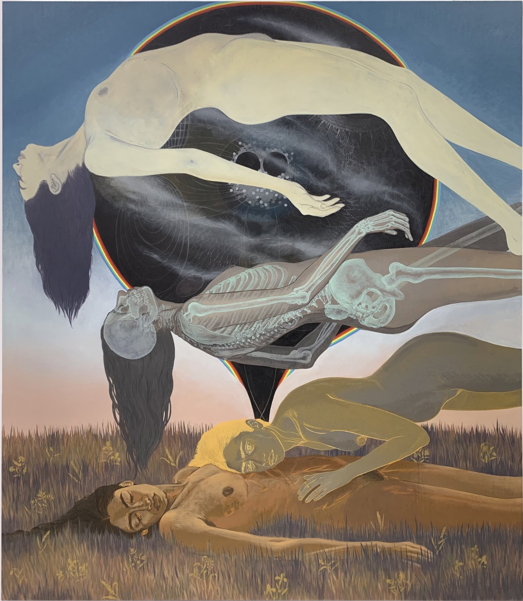

My name is Scarlett Woolsey
These are just a few artists who inspire me.
Nadya Waheed

She is a figurative oil painter that creates surreal scenes involving multiple aspects of herself.
I really want to incorporate that level of storytelling into my own work someday.
Annie Atkins

Atkins is a designer known for creating film props, most popularly for Wes Anderson.
She often works with more traditional media like typewrites, quills, and handlettering,
which is something I've been trying to integrate into my own designs.
Lou Benesch
Benesch is a watercolorist that creates colorful folk illustrations. I adore her use of bold color palettes,
as well as her creative compositions and surreal creatures. Everytime I see one of her pieces I want to paint
something colorful or just plain weird.